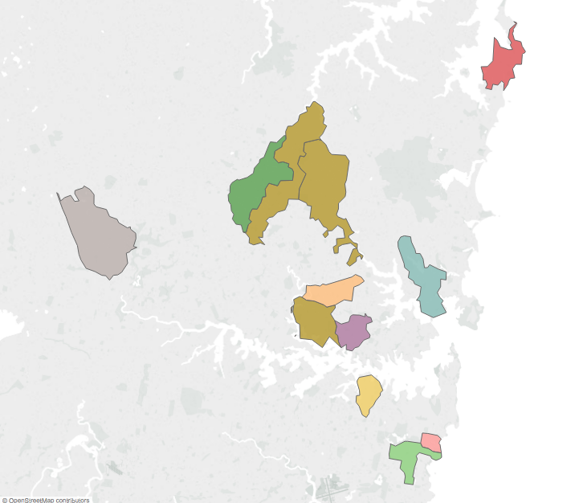

this week in class we used Tableau public to create visual maps and data visualization, this was a valuable and practical skill to learn and made me think I should add some visuals to my website blog if I have enough time and the capability to do so. We used Tableau to display data in a professional and attractive way to maintain the integrity of our work, Tufte states “the highest standards of statistical integrity and statistical thinking should apply to every data representation, including visual displays” (Tufte 1997, p. 35). I believe the map we created maintained its statistical integrity, as you can see in image 1. Image 1 represents all electorates in NSW with a mean taxable income of $60,000 to $100,000 and a donation values of more than $5,000,00.
 Carrying on from the class Tableau work, I decided to research how I would be able to add an image to my blog website. I researched how to add an image using HTML as that is where I hold my template for my blog website. To add an image, I would have to add tag into my HTML template and then link it to the URL of the image I would like to use. I am thinking I will add images in the final weeks of creating my blog when I am fine tuning the appearance because at the moment my main priority is completing the tutorial to ensure my blog is functional and easy to use. Once I am happy with the function of my blog and if I have enough time I would love to add a few images to make my blog more personal and more appealing to the eye.
In relation to my website blog progress, I decided to customize my blog a little bit more and after finalising my HTML template the next step is to push all the changes and then refresh and have a working website. However, my URL was not working anymore and all the changes did not commit. I was quite stuck on this step as I was unsure how to fix it or what to do and we did not have class till next Thursday. I tried searching online but I was getting a lot more confused and then I found the Django Girls Tutorial gitter group chat and decided to join this chat and ask for some assistance.
I was very happy with joining the Django Girls tutorial gitter group chat and I think it is a great resource for me, there are many people asking questions and providing guidance when errors occur. My website blog was reporting the issue as needing to fix DEBUG and the group chat kindly assisted me in moving past this step. I did not commit my local changes properly and my repertories were not up to date, as I did not commit and push them correctly. After fixing this step and pushing them correctly my blog was up and running!
{% block content %} {% endblock %}